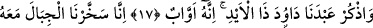
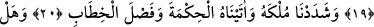
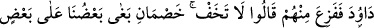
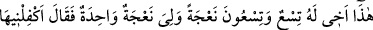
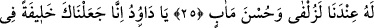
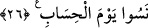

EY DÂVÛD!
ADALETLE HÜKMET
15. Bunlar da ancak, bir an gecikmesi olmayan korkunç bir ses beklemektedirler.
16. Rabbimiz! Bizim payımızı hesap gününden önce ver, dediler.
17. (Rasûlüm!) Onların söylediklerine sabret, kulumuz Dâvûd’u, o kuvvet sâhibi
zâtı hatırla. O, hep Allah’a yönelirdi.
18, 19. Doğrusu biz akşam sabah onunla beraber tesbih eden dağları, toplu halde
kuşları onun emri altına vermiştik. Hepsi O’na yönelmiştir.
20. Onun hükümranlığını kuvvetlendirmiş, ona hikmet ve güzel konuşma
vermiştik.